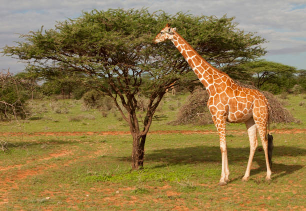

Conheça nossos mamíferos
Elefante africano
O elefante-africano é o maior mamífero terrestre do mundo, conhecido por suas grandes orelhas e longa tromba. Vive principalmente nas savanas e florestas da África. É herbívoro e se alimenta de folhas, frutos, raízes e capim.
Girafa
